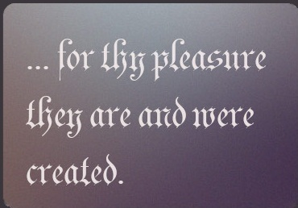

Built by God:
Now therefore ye are no more strangers and foreigners, but fellowcitizens with the saints, and of the household of God; And are built upon the foundation of the apostles and prophets, Jesus Christ himself being the chief corner stone; In whom all the building fitly framed together groweth unto an holy temple in the Lord: In whom ye also are builded together for an habitation of God through the Spirit.
Ephesians 2:19-22
And the Lord added to the church daily such as should be saved.
Acts 2:47
To whom coming, as unto a living stone, disallowed indeed of men, but chosen of God, and precious, Ye also, as lively stones, are built up a spiritual house, an holy priesthood, to offer up spiritual sacrifices, acceptable to God by Jesus Christ.
1 Peter 2:5
But ye are a chosen generation, a royal priesthood, an holy nation, a peculiar people; that ye should shew forth the praises of him who hath called you out of darkness into his marvellous light: Which in time past were not a people, but are now the people of God: which had not obtained mercy, but now have obtained mercy.
1 Peter 2:9-10
Looking unto Jesus the author and finisher of our faith;
Hebrews 12:2
For we are his workmanship, created in Christ Jesus unto good works, which God hath before ordained that we should walk in them.
Ephesians 2:10
To worship God:
Wherefore we receiving a kingdom which cannot be moved, let us have grace, whereby we may serve God acceptably with reverence and godly fear: For our God is a consuming fire.
Hebrews 12:28-29
But the hour cometh, and now is, when the true worshippers shall worship the Father in spirit and in truth: for the Father seeketh such to worship him. God is a Spirit: and they that worship him must worship him in spirit and in truth.
John 4:23-24
Thou art worthy, O Lord, to receive glory and honour and power: for thou hast created all things, and for thy pleasure they are and were created.
Revelation 4:11
Thou shalt worship the Lord thy God, and him only shalt thou serve.
Matthew 4:10
Saints of God:
Unto the church of God which is at Corinth, to them that are sanctified in Christ Jesus, called to be saints, with all that in every place call upon the name of Jesus Christ our Lord.
1 Corinthians 1:2
For by grace are ye saved through faith; and that not of yourselves: it is the gift of God: Not of works, lest any man should boast. For we are his workmanship, created in Christ Jesus unto good works, which God hath before ordained that we should walk in them.
Ephesians 2:8-10
Now therefore ye are no more strangers and foreigners, but fellowcitizens with the saints, and of the household of God;
Ephesians 2:19
Purge out therefore the old leaven, that ye may be a new lump, as ye are unleavened. For even Christ our passover is sacrificed for us: Therefore let us keep the feast, not with old leaven, neither with the leaven of malice and wickedness; but with the unleavened bread of sincerity and truth.
1 Corinthians 5:7-8
Perpetual:
Go ye therefore, and teach all nations, baptizing them in the name of the Father, and of the Son, and of the Holy Ghost: Teaching them to observe all things whatsoever I have commanded you: and, lo, I am with you alway, even unto the end of the world. Amen.
Matthew 28:19-20
And I say also unto thee, That thou art Peter, and upon this rock I will build my church; and the gates of hell shall not prevail against it. And I will give unto thee the keys of the kingdom of heaven: and whatsoever thou shalt bind on earth shall be bound in heaven: and whatsoever thou shalt loose on earth shall be loosed in heaven.
Matthew 16:18
But ye are come unto mount Sion, and unto the city of the living God, the heavenly Jerusalem, and to an innumerable company of angels, To the general assembly and church of the firstborn, which are written in heaven, and to God the Judge of all, and to the spirits of just men made perfect, And to Jesus the mediator of the new covenant
Hebrews 12:22-24

Built by God:
Now therefore ye are no more strangers and foreigners, but fellowcitizens with the saints, and of the household of God; And are built upon the foundation of the apostles and prophets, Jesus Christ himself being ...

To worship God: Wherefore we receiving a kingdom which cannot be moved, let us have grace, whereby we may serve God acceptably with reverence and godly fear: For our God is a consuming fire.

Saints of God: Unto the church of God which is at Corinth, to them that are sanctified in Christ Jesus, called to be saints, with all that in every place call upon the name of Jesus Christ our Lord ...
Perpetual:
Go ye therefore, and teach all nations, ... Teaching them to observe all things whatsoever I have commanded you: and, lo, I am with you alway, even unto the end of the world. Amen.